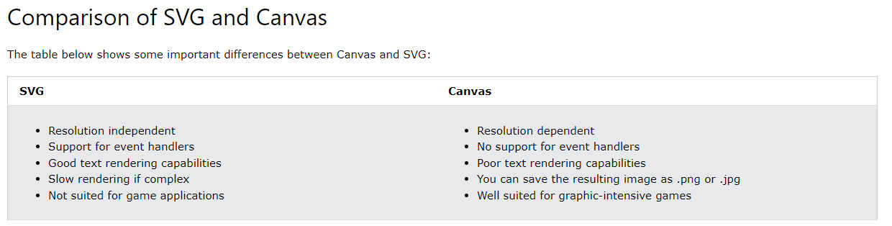

Este elemento é usado para desenhar gráficos via JavaScript. Ele é apenas um contêiner para os gráficos, é preciso usar JavaScript para desenhá-los. Há vários métodos para desenhar caminhos, caixas, círculos, texto e adicionar imagens. A maioria dos navegadores oferece suporte para este elemento.
É uma área retangular em uma página HTML. Por padrão, não tem borda, nem conteúdo.
SVG
SVG = Scalable Vector Graphics. Defines gráficos baseados em vetores para XML, e podem ser incorporados diretamente em páginas HTML. São escalonáveis e não perdem a qualidade com zoom ou redimensionamento. A maioria dos navegadores oferece suporte para SVG. Para usar gráficos desse tipo, use o elemento <svg>.
Cada elemento e atributo de arquivos SVG pode ser animado.
Integra-se a outros padrões, como CSS, DOM, XSL and JavaScript.
Diferenças entre SVG e Canvas
SVG é uma linguagem para descrever gráficos 2D em XML, enquanto Canvas desenha gráficos 2D com JavaScript.
SVG é baseado em XML, o que significa que cada elemento está disponível no SVG DOM. É possível vincular manipuladores de evento JavaScript a gráficos SVG.
Em SVG, cada forma desenhada é armazenada como um objeto. Se os atributos de um objeto SVG forem alterados, o navegador pode processar imediatamente a imagem.
Canvas é processado pixel por pixel. Quando o gráfico é desenhado, o navegador o esquece imediatamente. Se sua posição mudar, ele precisa ser redesenhado do zero, incluindo quaisuqer objetos que possam ter sido coberto pelo gráfico.

Exemplo de "canvas" com borda para indicar o espaço ocupado e JS de uma linha
Exemplo de "canvas" com borda para indicar o espaço ocupado e JS de um círculo
Exemplo de "canvas" com borda para indicar o espaço ocupado e JS de texto
Exemplo de "canvas" com borda para indicar o espaço ocupado e JS de texto vazado
Exemplo de "canvas" sem borda e JS de gradiente linear
Exemplo de "canvas" sem borda e JS de gradiente circular